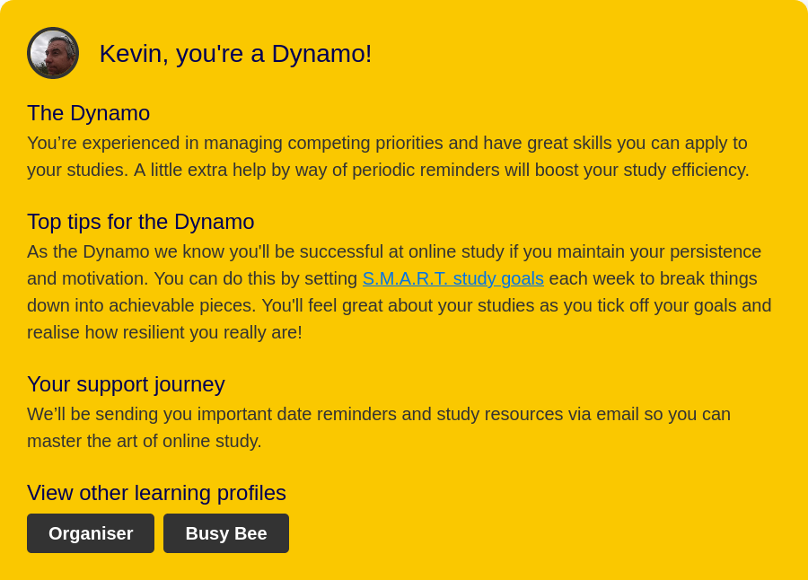

According to 16Persionalilies.com, I am an Turbulent Logician with the code INTP-T. According to this profile, I am a analytical and abstract thinker, imaginative and original, open-minded, enthusiastic, objective as well as honest and straightforward. Ask anyone would knows me personally if the results of this test are accurate, they are more to likely agree. Though personally I do believe the test accurately describe who I believe to be, I still remain rather sceptical.
My 16Persionalilies profileUsing the Personal Learning Profile on the Online Student Support Orientation, I am a Dynamo. It suppose to mean that I am good at managing competing priorities and have a good skill set that I can apply to my studies. Time will tell as I progress along with my studies whether or not this profile actually applies to me.
Screenshot of Personal Learning Profile
Using the Big Five test, I scored:
I do feel that the test results are accurate reflection of who I am.
Big Five test resultTheses test do provide a insight into my personality in a measured manor for people who do not know me or who I am. Potential employers can use it to gain an insight into what type an employee I could and how I can fit with my potential co-workers on projects. Though these tests can provide an insight into potential members of an team, they should not be over relied on. Performance of the team is still largely dependant of leadership and management of the team.